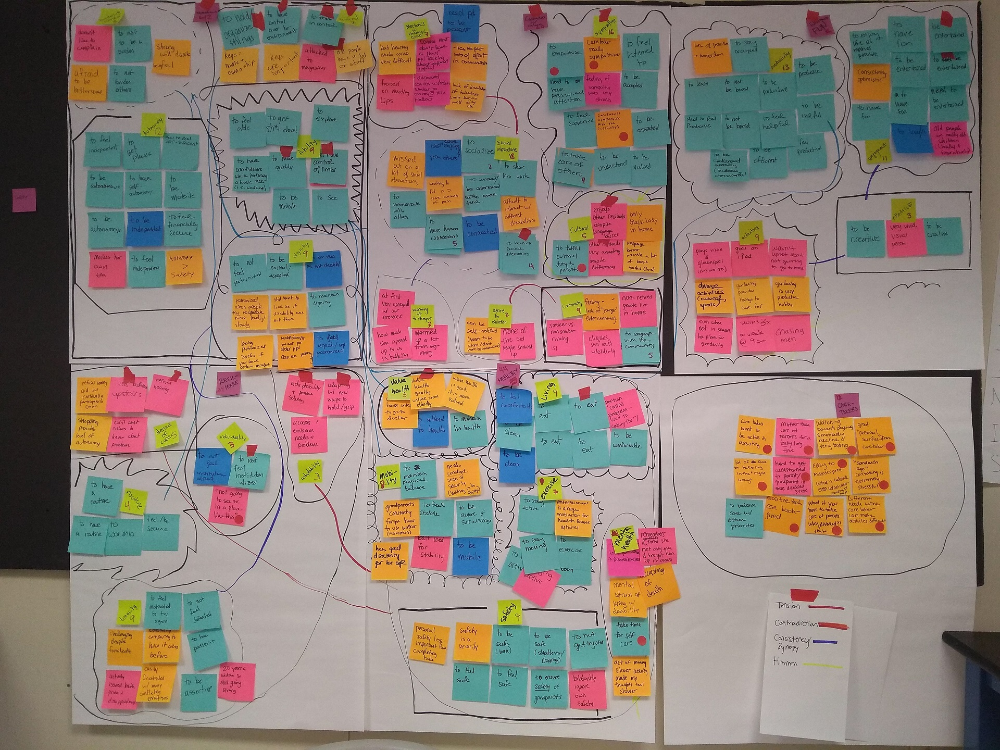
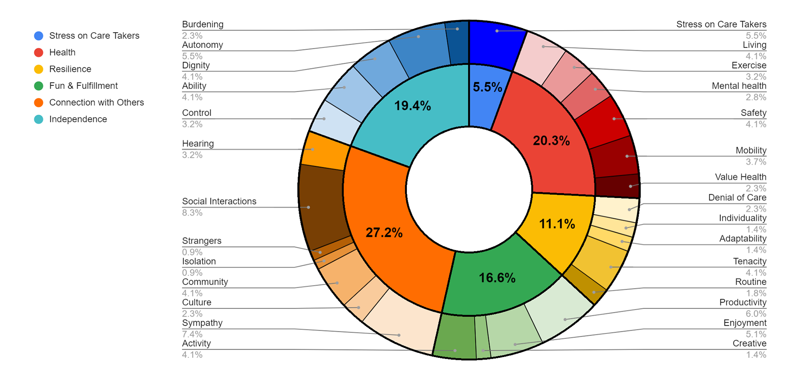
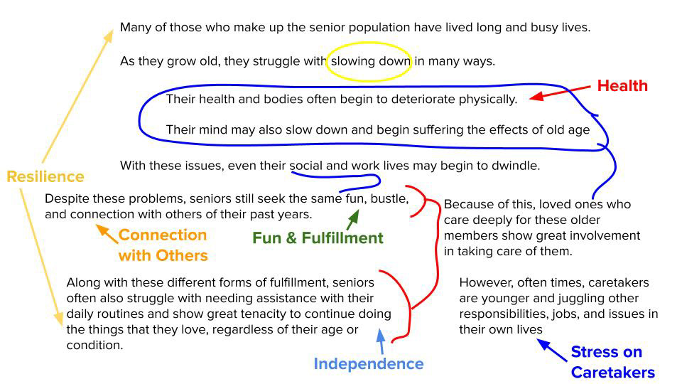
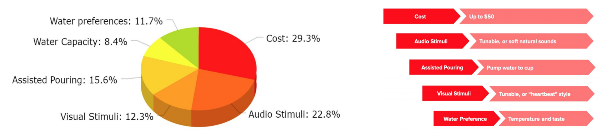

The Waterfül pitcher is a product designed for elderly users, providing an organic reminder system to promote hydration and a hands-free assisted pour. The design combines the form of the classic water pitcher handle with several novel functionalities.
This project was designed and manufactured with fellow Cornell Students (and wonderful human beings) Clara Dewey, Theresa Bracht, Zachary Capel, Dylan Hoang, Yaseen Islam, and Crystal Zhao
Dehydration is a problem prevalent in the majority of the population. However, this issue is much more severe within the elderly population as we begin to lose our sense of thirst with old age. Health complications such as Alzheimers and Parkinsons can further deteriorate this sensation of thirst, leading dehydration to be the leading cause of hospitalization for adults older than 65 (UCLA School of Nursing). A look into assisted living homes found that up to 31% of Long Term Care residents are dehydrated (Noll Physiological Research Center). The Waterfül pitcher aims to address this unmet need with a solution that makes hydration accessible without patronizing the user.
To begin exploring product ideas, our team started with empathy. We started by calling our friends and family to discuss the everyday problems they observed and experienced. With this learning, we tried to experience some of the pains expressed ourselves by dampening our senses and mobility for a day and trying to cook a meal together. This put us in the shoes of the user and let us realize the emotional frustrations with some of these disabilities. Next, we took to the streets of Ithaca to interact with the local elderly population and even visited several different assisted living centers to have more direct one-on-one conversations.
We took these experiences and created diagrams to better quantify our rather subjective data points. This was done by mapping out the objective points from the interview and trying to extrapolaet underlying motives and desires from the experience. This gave further insight on what needs and surprises we were able to draw from the user. These needs, insights, and surprises were placed on colored post it notes for further classification.
To make better sense of these emotional data points, we attempted to group them into categories, unmasking the overarching themes of what our users need. Lastly, we were able to arrive upon a flow of thoughts to encompass all of our findings into a smaller paragraph that could be used to derive a problem statement.
  With these findings fresh in our mind, our team jumped quickly into brainstorming. We thought of over 70 different concepts to address these different pain points. To narrow these ideas down, we used a Design Space Tradeoff Diagram in which we rated ideas as a team based on fasibility and desireability. Our top three ideas ended up being an interaction-centric piece for assisted living centers, an expanding lip trash can, and a pitcher to tackle dehydration in seniors. In the end, the water pitcher won out for its high feasibility and its potential to directly address one of the biggest problems in the elderly population.
Another large part of our project was determining the market potential, features, and user specifications for the product. One useful tool to do this was conjoint analysis. Conjoint analysis is a survey that asks users to compare different features of the product at various price points to determine the most desireable and important components of our product. Our results revealed to us that price, stimuli, and assisted pouring were the top three areas that we needed to nail. Furthermore, we also found that users would be willing to pay $50 and up to $100 for the product, setting a target for price for the pitcher.
In addition to this, we also created a House of Quality diagram which outlines the functional requirements of our product and compares our product to competing products.

The total household appliance market has been at a steady 3.9 Billion for several years while the smart water bottle industry has seen a recent surge in attention and sales. We hope that if we can tap into just 3% of this market, we will be able to project over 3 million in sales.
Looking at competing products, we see that our pitcher distinguishes itself in three major ways. First, no other competitors offer audio stimuli focusing mainly on phone notificaions and lights. Secondly, most of these products are marketed towards the younger population while the older market remains mostly untapped. Lastly, none of these devices offer any sort of assisted pouring, which our pitcher directly addresses. These water bottles come at the $70 price point, making a $50 pitcher even more desireable based on price.
Our first prototype was developed with some existing materials. We dremeled out an old Brita pitcher and made several 3D printed components for the rest of the enclosure. The handle had tubing routed through it and the base housed the electronics, lights, and pumps. There is also a power switch, button, and potentiometer to actuate the reminder system and tune settings for the intensity of lights and the frequency of reminders.
With this first prototype built, we created a small demo video to show off its functionality and then began some testing with the prototype. We brought it back to one of the assisted living centers and also had Theresa take it home for her grandparents to use for a few days.
This gave us some very valuable feedback. First, many found that it was a bit difficult to pour, though this is a problem among many objects as motor function begins to dwindle. Secondly, the capacity of the water pitcher was a big deal, as a larger pitcher proved to be a bit overwhelming to users. Lastly, there were concerns with the electronics being on the outside of the pitcher as they also seeemed to confuse many older users on what they were meant to do.
These findings brought us into prototype 2. To address the first problem, we added a spout integrated into the handle, taking advantage of the preexisting pump and the shape of the handle. When the spout is actuated, the pump will transfer water through the spigot and into any container underneath the handle rather than waterfalling it back into the top of the pitcher.
The second issue was addressed by purchasing a slightly smaller and more sleek container as our starting component. To make the controls more hidden away, we integrated a press-latch-lid into the base (similar to that found on a TV remote) that would give access to the tunable controls. This ensures that caretakers can set the device to desireable settings and children would not easily be able to adjust any of the settings. In addition, we also integrated a lid, pouring lip, and more stable base into the prototype. These features and pictures are shown below.
As we move forward we aim to make a third, more refined prototype. In this prototype 3, we hope to remove the microcontroller for analog circuitry, make the components easily manufacturable, and design the handle with better ergonomics in mind. We project that the total cost of production in a 5000 lot size would cost around $8.37 per unit, making the $50 selling price a feasible idea for profit.